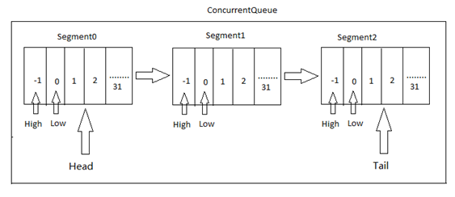

C#学习笔记1
最近在学习使用dotnet的服务端框架egametang,akka。把查阅和理解的dotnet知识点做下笔记
C#中的异步
async/await和TaskCompletionSource
C#提供async/await的异步方法.async/await以同步的写法处理异步问题，不用写callback，减少逻辑分段和上下文传递。await 只能出现在 async 函数中，等待task返回。简单理解是，await等待TaskCompletionSource.GetResult返回。使用例子：
1
2
3
4
5
6
7
8
9
10
11
12
13public Task<IResponse> Call(IRequest request)
{
var tcs = new TaskCompletionSource<IResponse>();
this.requestCallback[rpcId] = (response) =>
{
tcs.SetResult(response);
};
return tcs.Task;
}
public static async ETTask<IResponse> Call(message)
{
return await session.Call(message);
}另外，async/await和一般协程的实现不一样。对协程的理解：协程要处理的问题是，如何保存和恢复上下文，比如libdill的实现是基于线程栈实现，为
每个协程分配栈空间，离开时当前上下文压入栈，跳回来恢复栈中保存的寄存器。另一种实现是stackless协程，所有的局部变量和函数参数都在堆上分配，可以减少内存分配，但功能不全，不能被嵌套调用等。据说async/await是基于stackless实现的完整协程，后面有空再读读async/await实现原理。
异步socket
- API:c#中提供ReceiveAsync，SendAsync，AcceptAsync等异步socket的api.
比如从referencesource.microsoft查看ReceiveAsync的调用，ReceiveAsync调用的是WSARecv，也就是异步IO模型是Windows的IOCP. - SocketAsyncEventArgs：每个socket分配内存和复用对象，设置读写buffer（setBuffer）和回调（onComplete），为了避免在异步套接字I/O量非常大时发生重复的对象分配和同步。
- IO模型理解：从等待数据和读写数据来看，iocp的异步在于，等待数据和读取数据都是异步进行，比如recviveAsync，当收到onComplete回调时，buffer数据已经完成了从内核到用户空间的copy;相比,epoll的读写数据是同步的。
SynchronizationContext
- SynchronizationContext线程间同步,像ET的做法是主线程拥有SynchronizationContext,其它线程调用SynchronizationContext的Post方法给主线程发消息。
ConcurrentQueue
- c#中的并发队列 ConcurrentQueue
参考

- 实现原理是分Segment,段内是数组的实现，段与段之间的链表，优点是减轻纯数组实现的扩容内存开销和纯链表实现时频繁出队入队的耗时。
实现1
2
3
4
5
6
7
8
9
10
11public void Enqueue(T item)
{
SpinWait spin = new SpinWait();
while (true)
{
Segment tail = m_tail;
if (tail.TryAppend(item))
return;
spin.SpinOnce();
}
}
SpinWait:自旋锁，维护一个m_count，根据SpinOnce触发的次数，作出调整策略，比如SpinOnce20次数可以线程挂起1
internal const int SLEEP_1_EVERY_HOW_MANY_TIMES = 20; // After how many yields should we Sleep(1)?
TryAppend1
2
3
4
5
6
7
8
9
10
11
12
13
14
15
16internal bool TryAppend(T value)
{
...
newhigh = Interlocked.Increment(ref m_high);
if (newhigh <= SEGMENT_SIZE - 1)
{
m_array[newhigh] = value;
m_state[newhigh].m_value = true;
}
if (newhigh == SEGMENT_SIZE - 1)
{
Grow();
}
}
return newhigh <= SEGMENT_SIZE - 1;
}
其中Interlocked.Increment是原子操作
Assembly
1 | Represents an assembly, which is a reusable, versionable, and self-describing building block of a common language runtime application. |
Assembly是可重用、无版本冲突并且可自我描述的公共语言运行时（Common Language Runtime ）应用程序构造块。c#的程序集，也就是编译后生成的.exe或.dll文件
通过反射Reflection可以提取Assembly的属性
- GetCustomAttributes 方法列出应用于程序集的特性
- GetTypes 方法列出程序集中的所有类型